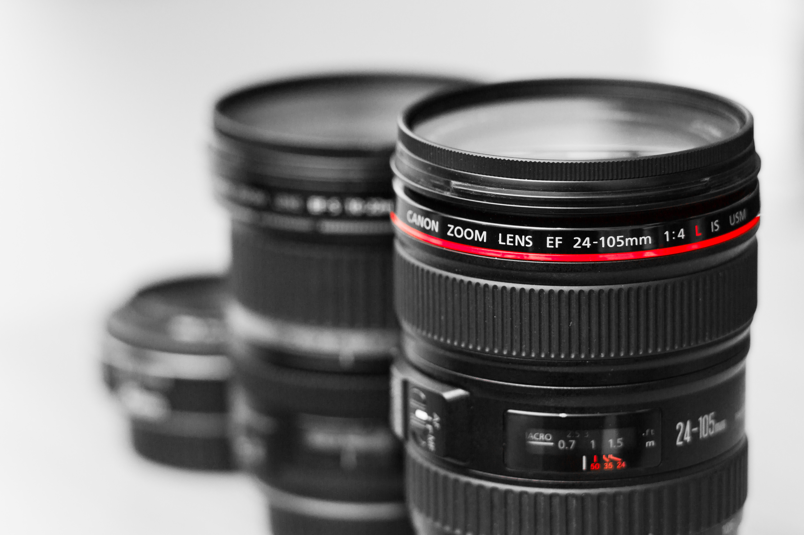

William Lay
Engineer, Leader, Photographer, Production
Technician and Sound Engineer.
This is my personal website where you can find out a bit about what I do, and who I am.
Engineer, Leader, Photographer, Production
Technician and Sound Engineer.
This is my personal website where you can find out a bit about what I do, and who I am.
Technical lead and hands-on engineer working across firmware, cloud infrastructure, DevOps automation, and AI.
Markus SpiskeTeam Leader and Tech Lead who built an engineering team from zero to nine, and who leads through coaching, agile transformation, and technical direction.
Helena LopesAn experienced live and theatre event Show Technical Manager, Lighting Technician, Lighting Designer and Sound Engineer.
Lui PengExperienced Photographer who specialises in unobtrusive event photography. Other work includes headshots, landscapes, and sport.
William Lay
These are my hobbies or projects I have picked up and run with. Click in to read more.